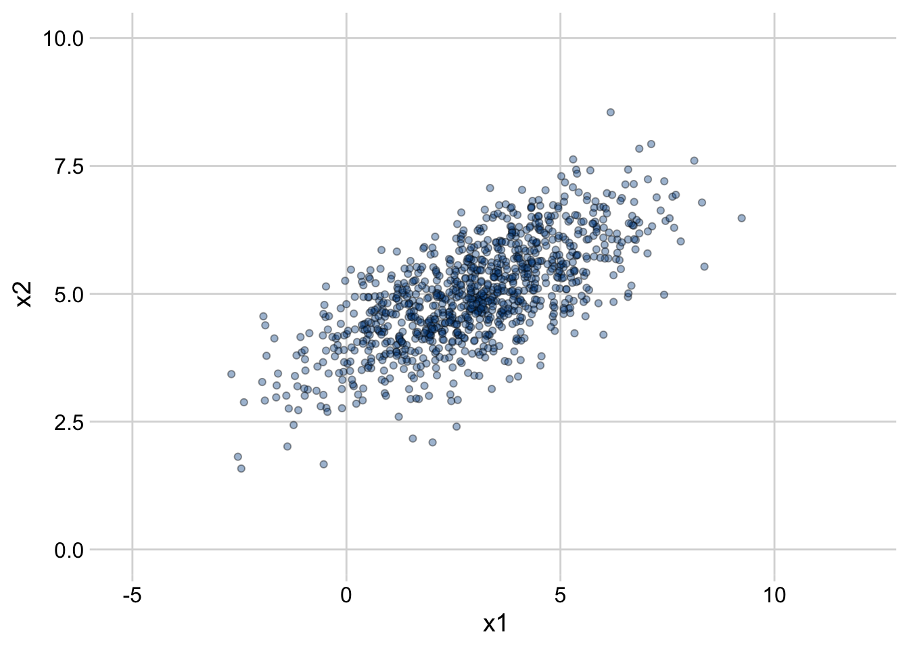

4 Basic Probability and Statistics
Here is some code to generate and plot 1000 samples from a bivariate normal distribution.
# Set parameters
set.seed(7)
mean1 <- 3
mean2 <- 5
sd1 <- 2
sd2 <- 1
rho <- 0.7
# Compute the covariance from the variances and the correlation
cov <- rho * sd1 * sd2
# Generate 1000 draws
m <- mvrnorm(n = 1000, mu = c(mean1, mean2), Sigma = matrix(c(sd1^2, cov, cov, sd2^2), nrow=2))
# Set column names and convert to tibble
colnames(m) <- c("x1", "x2")
df <- as_tibble(m)
df %>%
ggplot(aes(x=x1, y=x2)) +
geom_point(alpha=0.4, fill="#005394", shape=21) +
scale_x_continuous(limits=c(-5,12)) +
scale_y_continuous(limits=c(0,10)) +
cowplot::theme_minimal_grid()
# Test the equation for sd(X1+X2)
sd(m[,1] + m[,2])## [1] 2.755895
sqrt(sd1^2 + sd2^2 + 2*cov)## [1] 2.792848